Boat first registration aims to streamline the vessel registration process. It simplifies application submission, document verification, approval, and issuance of the initial registration certificate. This manual provides clear, step-by-step instructions for users to efficiently navigate the system.
The system can be accessed through Officer → New MSDFAR System by visiting the Department of Fisheries and Aquatic Resources website.
• Before access to the system, scan & save the following documents.
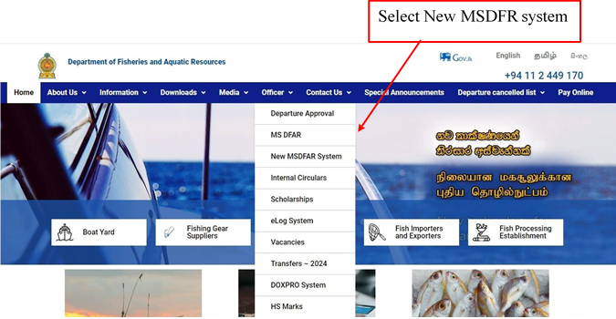
• Users authorized to access the system will be provided with login credentials.
• Upon successful login, users will have access to the dashboard with relevant features and functionalities.
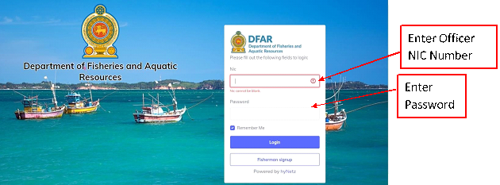
• After that, the Fisherman register module can be accessed in the manual bar of the screen that appears by the Fisherman login.
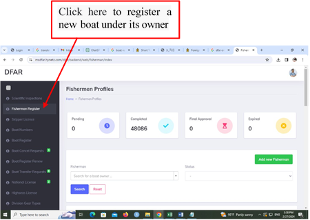
• Type the Fisherman ID to search relevant Fisherman.
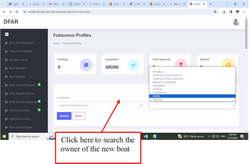
• Select relevant Fisherman ID
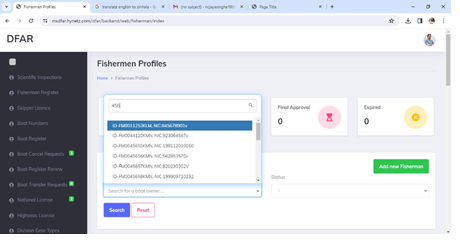
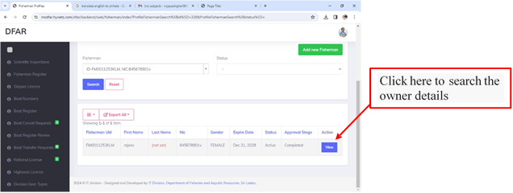
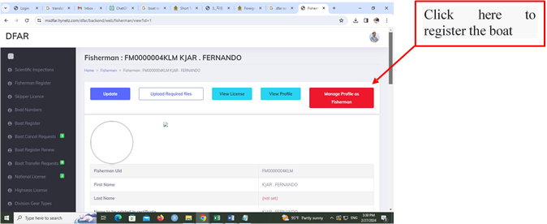
• Fisherman Dashboard can be view as follows
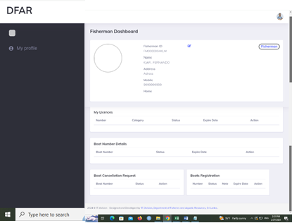
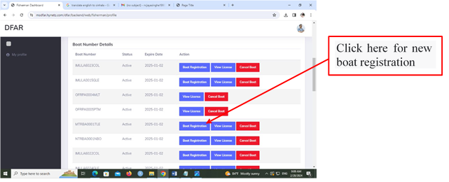
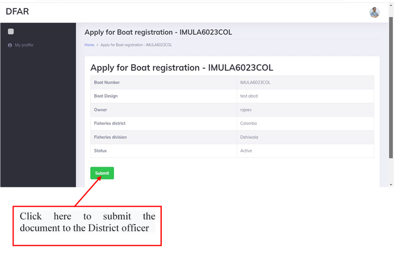
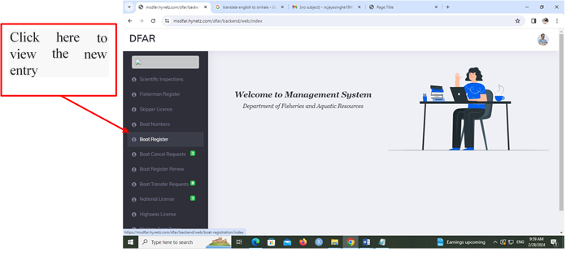
• By clicking status as "Pending", District officer can view the Pending applications
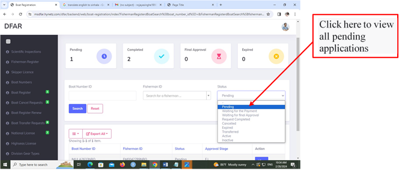
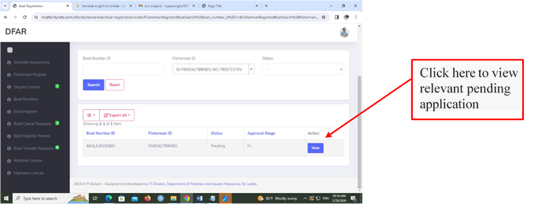
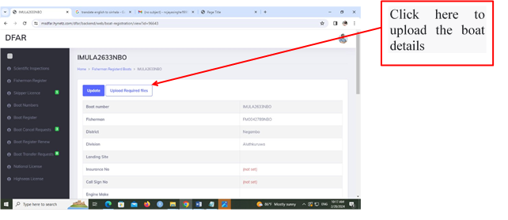
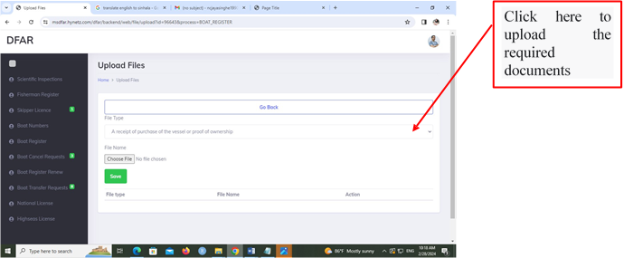
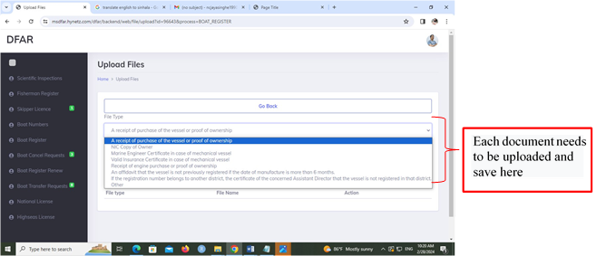
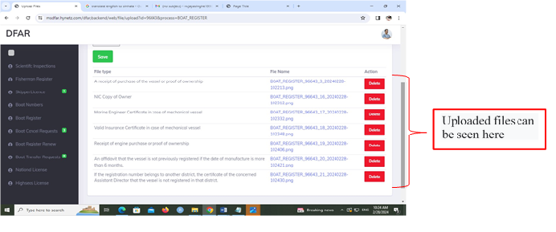
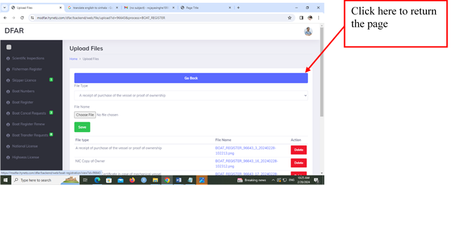
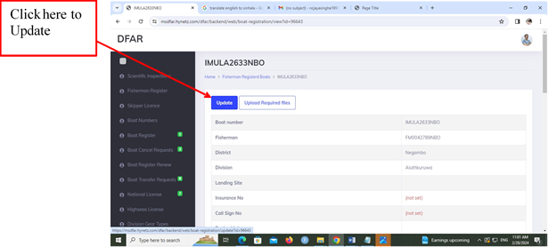
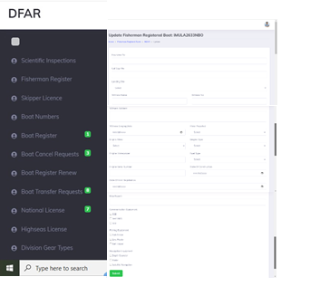
• After entering all the details, the document can be submitted.
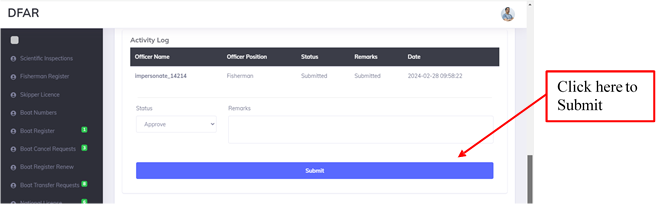
•Then it is forwarded to the DFI. These details can be viewed by DFI by clicking Pending as the status.
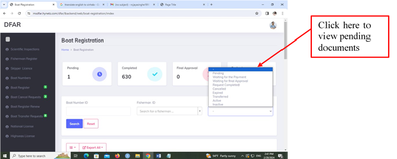
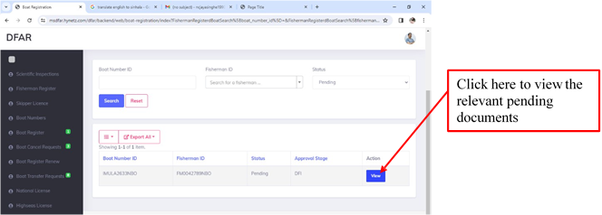
• By clicking "Submit" the document can be forwarded to the District Assistant Director.
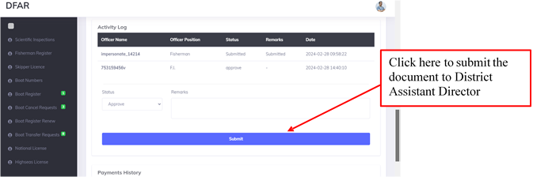
The District Assistant Director can view the document and forward it to Director (Management) and then it is forwarded to the DG.